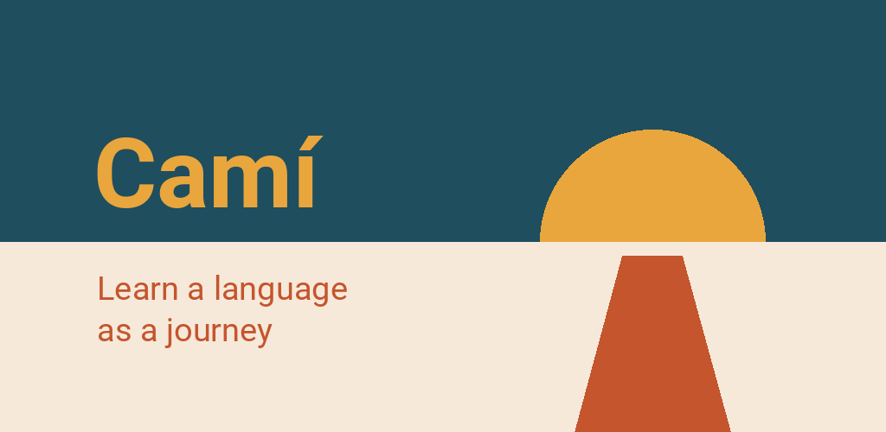

Camí – Learn languages
Learn Icelandic, Catalan, Basque, Croatian, Danish & more — no account
For Android 7 and later


Camí is a language app built like a journey. Every stage is a real place: Barcelona, the Ebro Delta, the Serra de Tramuntana. Finish a stage and you get a small reward — a proverb, a recipe, a scene set in that place, or a postcard that stays as the app's background.
Fourteen languages, fourteen journeys
- Catalan: Catalonia, Mallorca, the País Valencià
- French: France, western Switzerland, Wallonia
- German: northern Germany, the Alps, Austria, Switzerland
- English: Great Britain, Ireland, Malta, Cyprus
- Spanish: Andalusia, Castile, Mexico
- Polish: Lesser Poland, the Carpathian foothills, Masovia, the Baltic
- Danish: Copenhagen, the islands, Jutland
- Greek: Athens, the Peloponnese, Crete, the Cyclades
- Croatian: Istria, Dalmatia, Zagreb
- Italian: Tuscany, Umbria, Lazio
- Icelandic: once around the island
- Basque: Biscay and Gipuzkoa
- Korean: Seoul, the capital region and Gangwon
- Slovenian: Ljubljana and Gorenjska
Six courses start with 55 stages: all of A1 and A2, plus the first stages of B1 and B2. English is entirely free, 94 stages up to B2. Icelandic, Greek and Croatian start with 37 stages, Italian with 52, Korean with 49, Basque with 31 and Slovenian with 28 — the last four keep growing. Everything is explained in German, English, French, Catalan, Spanish or Polish: learn Catalan in German — or German in Catalan, English in French, and so on. Changing the language you learn in costs you no progress.
What you get
- Nine kinds of exercise: choice, gaps, pairs, sentence building, listening, sorting, transforming, reading, dialogue — from A2 on, gaps and dictations are typed instead of tapped
- A listening story at the end of every stage: local people talking, read out line by line, with questions along the way
- Pronunciation exercises: Camí listens and shows how closely you match (Catalan, English, German, Italian)
- A grammar backbone: every form has its stage, with the rule, examples and a reference section
- Flashcards on widening intervals, built from the lessons you have finished
- A hand-drawn map of your journey, with background on every region
- A placement test if you are not starting from zero
- Daily goal, weekly goal and a streak — no timers, no lives to lose
- An optional leaderboard with a nickname, no account
No account, offline
Camí needs no sign-up. Courses and maps are built in; photos, voices and the voice pack for pronunciation come with the course from Google Play. Your progress stays on your device. No ads, no tracking, no purchases. On its own, the app goes online only when you want it to: to join the leaderboard, or to send a problem via Feedback.
Everything is read aloud with Camí's own natural voices, in every language except Basque. In the settings you can choose your phone's voice instead.